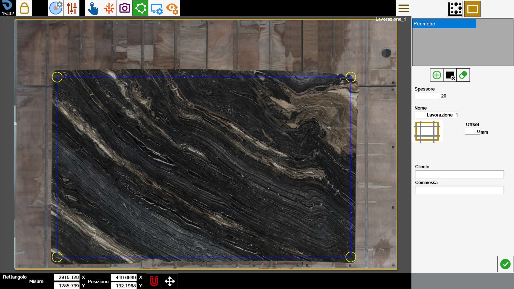
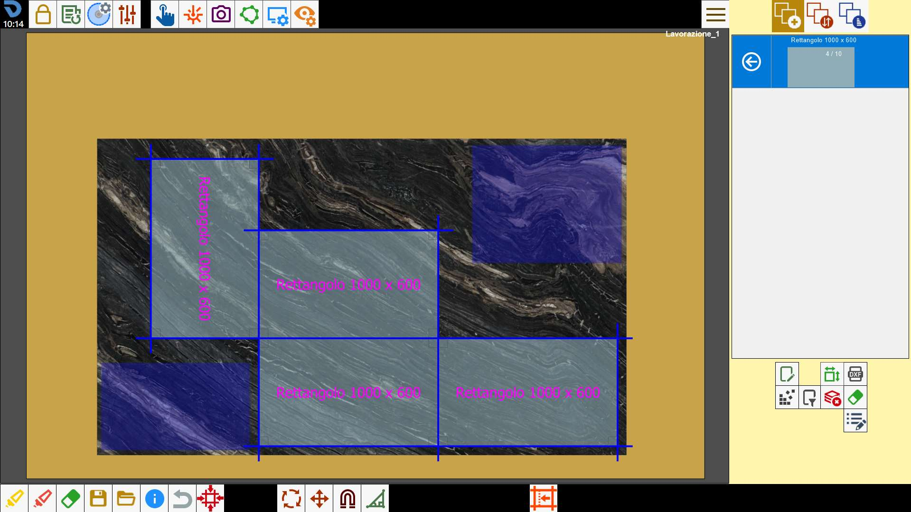

Pour fonctionner, le programme doit connaître le bord de la dalle sur laquelle il doit travailler. Cette fonction permet de tracer le périmètre.

Mode de création du périmètre
Le programme permet à l’opérateur de dessiner le périmètre selon l’un des modes suivants :
 | Mode rectangle |
 | Mode par points |
Il est possible de passer d’un mode à l’autre à tout moment pendant la création du périmètre.
En passant du mode « par points » au mode « rectangle », le périmètre est converti en rectangle et tous les sommets du polygone sont perdus.
Une confirmation est demandée avant d’effectuer cette opération.
Rectangle
Ce mode permet de créer des périmètres rectangulaires.
Pour modifier les dimensions et la position du rectangle, faire glisser les cercles jaunes dans la zone de travail ou modifier les valeurs indiquées dans la barre ci-dessous.

Dimensions | Dimensions du périmètre sur l’axe X et sur l’axe Y. |
Position | Coordonnées du sommet inférieur gauche du rectangle par rapport au sommet inférieur gauche du plan de travail. |
Par points
Ce mode permet de créer des polygones de forme arbitraire.
Pour ce faire, l’opérateur peut placer les points formant le périmètre aux positions souhaitées, comme illustré ci-dessous.

Dans ce mode, il est possible d’interagir avec le périmètre à l’aide des boutons suivants :
 | Fermer le périmètre |
 | Supprimer le dernier point |
Une fois fermé, le périmètre devient bleu et ses sommets sont indiqués par des cercles jaunes.
Pendant la création comme en présence d’un périmètre fermé, il est toujours possible de déplacer les sommets dans la zone de travail afin d’améliorer la précision.
Barre inférieure
L’opérateur peut interagir avec un périmètre présent dans la zone de travail à l’aide des boutons situés dans la partie inférieure de l’écran.
Aimantation sur laser croix | |
Déplacement du périmètre |
Créer un nouveau périmètre
Le programme permet de créer plusieurs périmètres sur lesquels disposer les pièces à usiner.
Il est également possible de définir des zones de la dalle dans lesquelles aucune pièce ne peut être insérée.
 | Périmètre |
 | Zone à éviter |
Supprimer le périmètre |
Les périmètres créés sont visibles dans la liste en haut à droite. Pour modifier un périmètre, il suffit de le sélectionner dans la zone de travail ou de sélectionner l’entrée correspondante dans la liste.
Le périmètre actuellement sélectionné présente des contours bleus et des sommets jaunes, tandis que les autres peuvent également être distingués par leur couleur : vert pour les périmètres des dalles, orange pour les zones à éviter.

Cet écran permet d’ajouter des coupes de détente à la dalle.
 | Dressage de la dalle |
Pour terminer la création du périmètre, l’opérateur doit saisir certaines informations concernant l’usinage à effectuer.
Épaisseur | L’opérateur doit indiquer l’épaisseur de la dalle présente sur le plan de travail. |
Nom | Nom à attribuer à l’usinage de la dalle. |
Client | Indique le nom du client pour lequel la commande est réalisée. Ce champ est facultatif. |
Commande | Indique un identifiant de commande. Ce champ est facultatif. |
L’épaisseur de la dalle et le nom de l’usinage sont des champs obligatoires à renseigner avant de confirmer le périmètre.
En revanche, il n’est pas nécessaire de renseigner les informations relatives aux propriétés supplémentaires ci-dessous.
Zones à éviter
Les zones à éviter sont des zones de la dalle que l’opérateur souhaite rendre indisponibles pour le positionnement des pièces.
Cela peut être dû à la présence de fissures dans le matériau, de veines peu esthétiques ou à la nécessité de préserver certaines parties de la dalle.
Elles sont représentées par des zones bleues dans la zone de travail.

Lorsque la fonction Nesting est utilisée, les pièces sont disposées de manière à n’occuper aucune de ces zones.